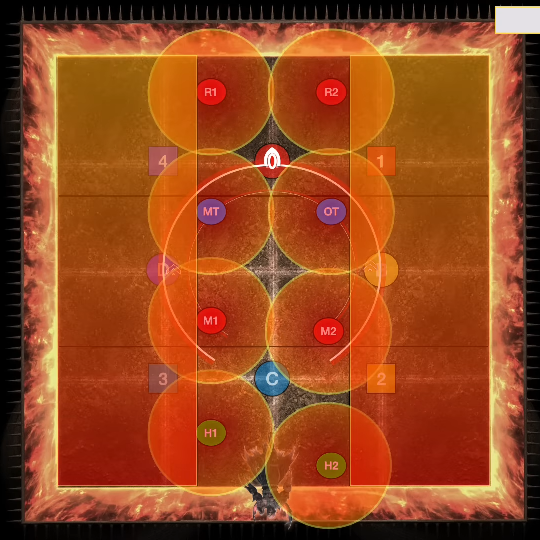

Asphodelos: The Fourth Circle (Savage) is a high-end duty added in patch 6.05. The fight can be unlocked by speaking to Nemjiji in Labyrinthos (8.4, 27.4) after completing Asphodelos: The Fourth Circle.
The minimum ilvl required to enter this fight is 580.
Hesperos will tether to either all supports or all DPS and hit them with Bloodrake. After this, he will use Aetheric Chlamys and absorb the aether of whoever was hit by Bloodrake. Whoever was hit by Bloodrake cannot be hit by upcoming tethers, or they will die.
Hesperos will tether to either all supports or all DPS and hit them with Bloodrake. After this, he will use Director's Belone and absorb the aether of whoever was hit by Bloodrake. Whoever was hit by Bloodrake cannot have a virus debuff at the end of the mechanic, or they will die. The Role Call debuff will go to two random supports and two random DPSes after Director's Belone finishes casting. The role that wants to avoid viruses should all stack south of the boss's hitbox, and the role that should take viruses should spread out.
Hesperos will resolve Aetheric Chlamys and Director's Belone. Players should first handle the virus and then the tethers.
Players who have the Role Call virus debuff can pass it by touching another player. Passing a virus gives the player the Miscast debuff, which makes them immune to viruses and prevents them from taking another virus debuff. Players who were hit by the second Bloodrake should stack up. The players who were not hit by the second Bloodrake should spread out. If they start with a Role Call virus debuff, they should stay out. If they did not have one, they should dip into the stack to take someone's virus debuff. Be careful not to collide with other players dipping in to take the virus.
Players who were not hit by the first Bloodrake should take tethers, which spawn 7.5 seconds after the virus debuff goes out. The players who do not want the tethers should move south to make passing tethers easier. Players who want tethers should swoop in from the sides to intercept them, then spread out to avoid the spread AOE that happens when the tether resolves.
It is possible that one role type will need to avoid or resolve both mechanics.
Everyone should go to their intercard quadrant. There are 3 possible safe spots in your corner of 4 squares (the far corner is never safe). The safe spot will be determined by which way the flames turn as soon as they hit the first wall. Depending on your pattern, you can pre-position for the next mechanic, Sunforge.


This follows up 2 seconds after the previous Volcanic Torches, so you'll need to be fast. Depending on your Volcanic Torches pattern, you may need to run from your safe white square spot to your safe black square spot. The Conceptual Tetraflare / Conceptual Octaflare also resolves at the same time, so be ready to stack or spread while respecting the Sunforge column AOEs. If it's a Conceptual Tetraflare, ranged players should stack on the tanks / melees. The image shown is phoenix + Conceptual Octaflare.
Here is a video example of the mechanic from ranged2's POV with Conceptual Tetraflare and the serpent for Sunforge.
gggggggggggggggggggggggggggggggggg
After this, Hephaistos will do one raidwide and then enrage. If you push him below 50%, you'll be graced with his second phase.